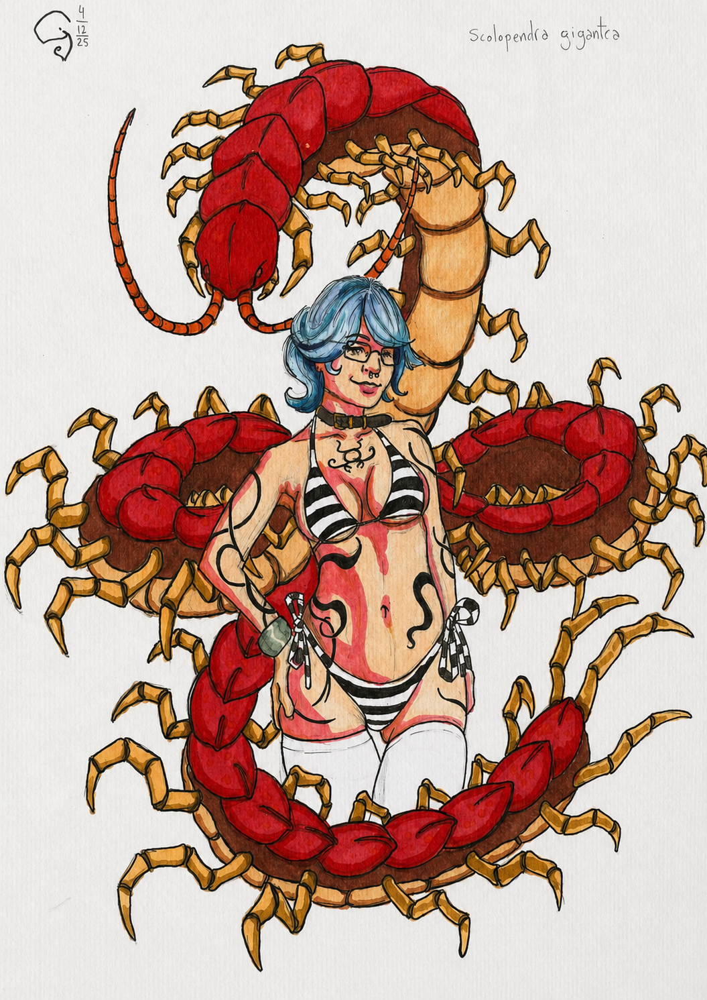
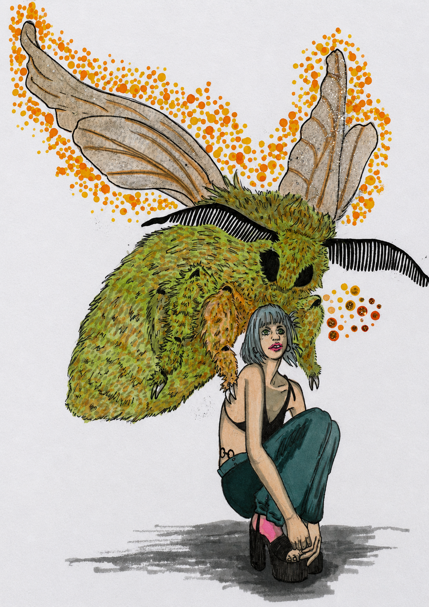
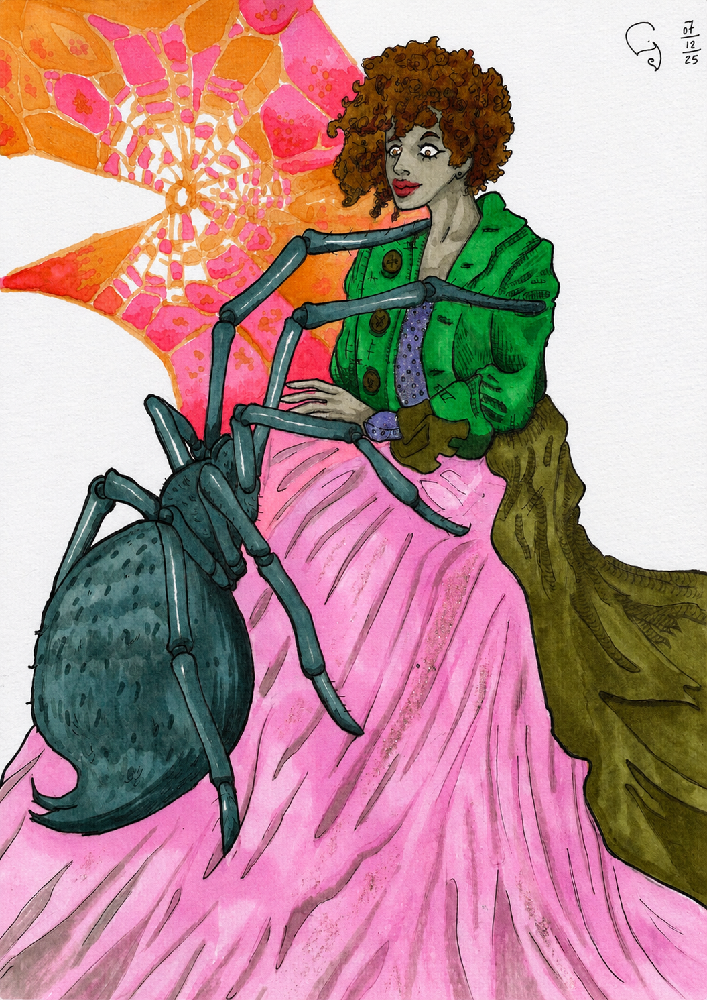
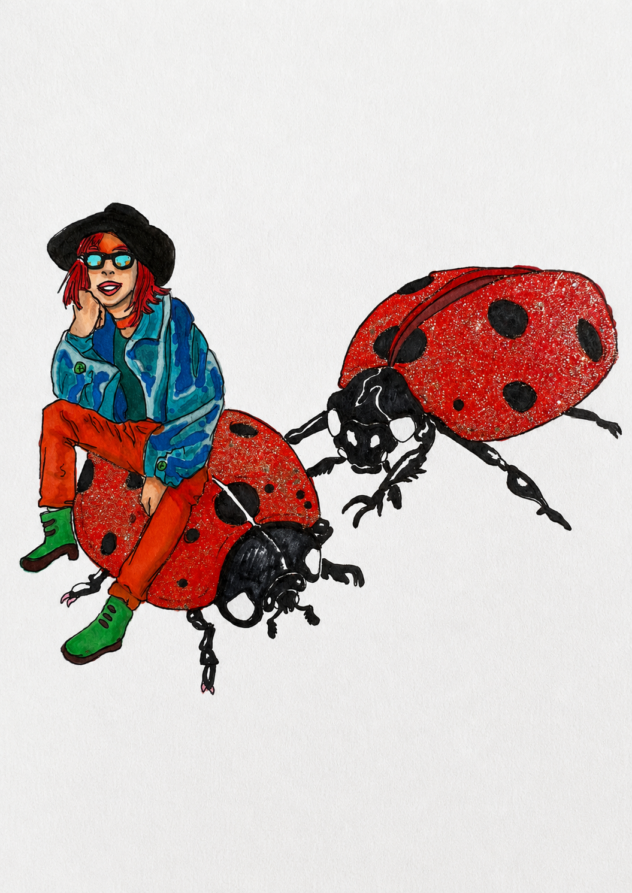
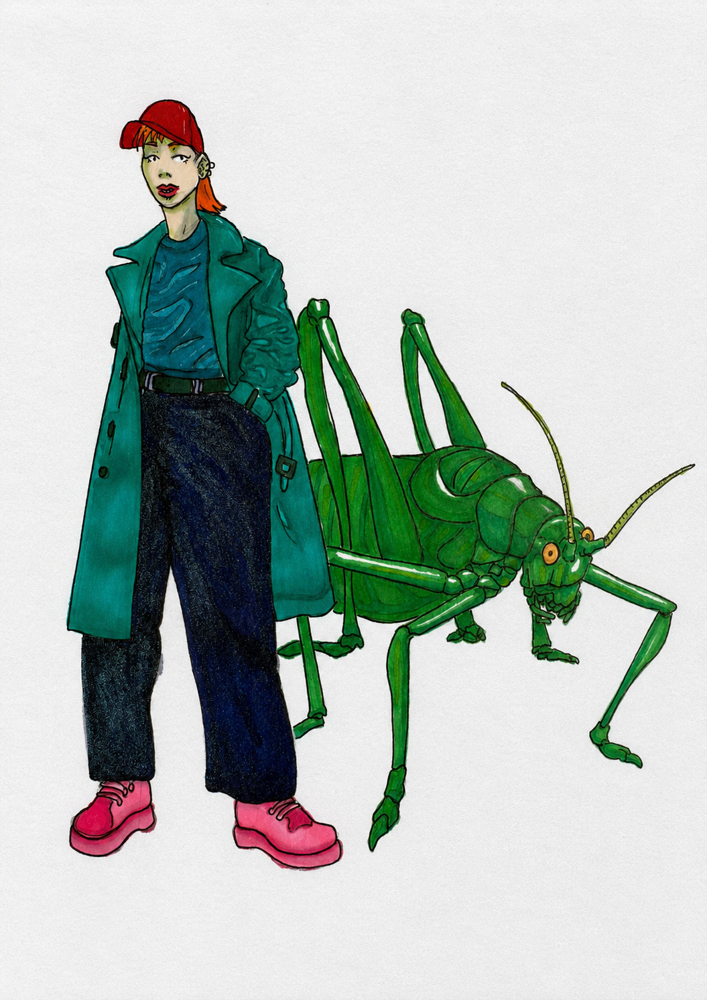
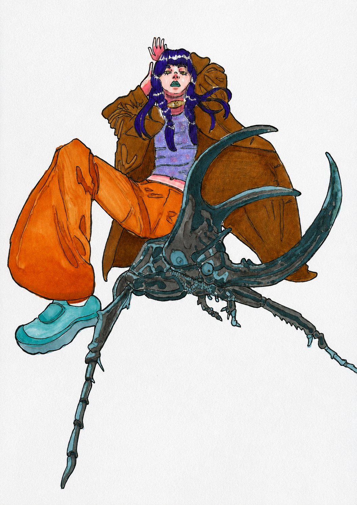

Portfolio artístico
Semilla Daltónica
Ilustraciones donde la mirada se vuelve materia: figuras femeninas, insectos y mundos mínimos que revelan cómo el lente con que observamos la vida termina dándole sustancia a la realidad.

Obra
Serie de ilustraciones realizadas en 2025. Cada pieza parte del encuentro entre figura, insecto y percepción: organismos que aparecen como símbolos de transformación, extrañeza y belleza mínima.
Actias luna

Grammostola rosea

Hippodamia convergens

Dichroplus elongatus

Dynastes hercules
Statement
Esta sección debe decir qué busca la obra, no solo qué muestra. Conviene que sea breve, concreto y propio.
Mi práctica nace de una pregunta sobre la percepción: qué sucede cuando el mundo deja de ser algo fijo y empieza a revelarse como una materia sensible, afectada por el lente con el que miramos. Trabajo desde la ilustración para construir escenas donde lo femenino, lo orgánico y lo insectil conviven como presencias ambiguas: delicadas, extrañas, íntimas y mutantes.
Me interesan las imágenes que parecen guardar un secreto. Cuerpos, alas, antenas, ojos, flores y pequeñas criaturas funcionan como signos de transformación. En ese cruce busco una poética visual suave, pero no inocente: un universo pastel atravesado por apariciones intensas de color, donde la ternura también puede ser misterio.
Bio
Perfil breve para convocatorias, curadores, becas, residencias y contactos profesionales.
Sobre mí
Semilla Daltónica es ilustradora en San Martín de los Andes, Neuquén, Argentina. Su obra explora la percepción, la figura femenina y el mundo de los insectos como territorios simbólicos donde lo cotidiano se vuelve extraño, sensible y transformador.
Líneas de trabajo
- Ilustración, percepción y mundos sensibles.
- Figura femenina, metamorfosis y misterio.
- Insectos, naturaleza mínima y símbolos orgánicos.
- Paletas pastel con irrupciones saturadas de naranja, violeta y celeste.
CV
Reemplazar estos ejemplos por formación, muestras, becas, talleres, residencias, publicaciones y experiencias reales.
2026
Proyecto / muestra / convocatoria
Espacio, ciudad o institución.
Espacio, ciudad o institución.
2025
Formación / taller / clínica
Docente, institución o espacio de formación.
Docente, institución o espacio de formación.
2024
Participación artística / publicación
Breve descripción profesional.
Breve descripción profesional.
Contacto
Trabajos, muestras, convocatorias y proyectos.
Para consultas, invitaciones, colaboraciones o solicitud de dossier artístico, escribir por mail o redes.